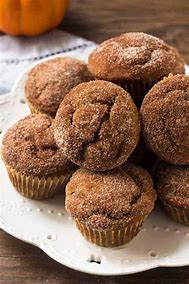

The table below shows examples of cakes (products) we provide with their prices and how healthy they are!
SCONES |
Flour is one of the major ingredients in biscuits and scones, and it's a logical place to start when you're interested in making yours healthier. Substituting whole-wheat flour for all or part of the white is an obvious starting point. |
|
Muffins |
 | Bran muffins are packed with vitamins, minerals, and other important things such as fiber.Wheat bran is highly nutritious and an excellent source of fiber. It may benefit digestive and heart health and could even reduce breast and colon cancer risk. |
These Healthy Cupcakes are light, fluffy, and moist. They’re also less sweet than most conventional cupcakes, both in the cake and in the pretty pink frosting, but they are still SO delicious! |
Cupcakes |
PAYMNENT
We accept all payments by Mpesa or Ecocash